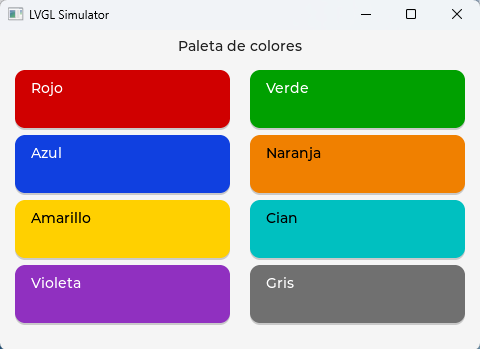

BasicPlus
A general-purpose language for 32-bit microcontrollers: modern BASIC syntax, object orientation, a graphical interface and a first-class debugger. It compiles to bytecode that runs identically on the PC and on the micro.

GuiColorDemo on a board — GUI with LVGL. The same bytecode runs on the PC and on the micro.
The same program you debug on your desktop later blinks an LED on a
Raspberry Pi Pico 2, an ESP32 (S3, C3, C6 or P4) or an STM32 — no recompiling, no
#ifdef, no surprises. On a PC with no GPIO the hardware
builtins log to the console; on the board they drive real pins. The
bytecode is the same, byte for byte.
// blink.bp — blinks the Pico on-board LED (GP25) using the OO API.
module Blink
import Gpio
function Main()
var led: Gpio.Pin := Gpio.Pin(25, Gpio.Pin.OUTPUT)
var i: integer := 0
while i < 100 do
led.on()
sleep(300)
led.off()
sleep(300)
i := i + 1
endwh
print "Blink done"
end Main
end Blink
And a micro does not only move pins: it also stores data. BasicPlus ships
SQLite — the same engine, the same .db file and the same code
on the PC and on the board, with the database on an SD card. You can write the SQL by hand
or let the ORM write it from your classes.
// Entities are annotated, and the compiler generates the DAO.
@BD{ tabla = "readings" }
public class Reading
@BD{ pk } public property id: long
@BD{} public property value: double
end Reading
// ...and then, not one SQL statement in sight:
var w: Orm.Where := Orm.Where()
var cold: List := dao.list(w.lt("value", 22.0d))The engine does not live inside the VM: it is burned separately, in a pack, so only those who use it pay for it — and it runs from flash without eating RAM. How it works, in full →
New in V6 — order in the micros: whatever did the same job on every
micro is now shared code (a bit over 90 % of each image, measured), so adding a micro from
a family we already support is comparatively easy. Two new micros come in, the
ESP32-C3 and the ESP32-C6 (with the first SPI display);
the GUI runs in its own thread and its component tree can be saved and reloaded as JSON;
the micro's screen can be captured from the PC (Gui.shot);
the IDE keeps talking to the board while a program runs; and a semi-automatic test system
drives the boards. Seven images for nine boards; verified on real hardware across eight
boards and three architectures. Everything from V5 — the SD card, SQLite, the ORM and
packs — is still there. Details in the
v6.0 release and the
release notes (Spanish).
Getting started
The language and the tools
native (AOT) functions.
Reference →
The complete standard library, the command line and the on-disk artifacts (.mod, .dbg, .pack…).
Graphical interface →
The Gui module: screen and widgets, layout, color and fonts, events and forms. Same bytecode on the PC and on the board.
Databases →
SQLite on the micro: the pack, plain SQL, @BD entities, the ORM with its generated DAOs, indexes and how not to eat your memory.
Packs →
Shipping a library in one piece and burning it onto the board: the two kinds, what goes inside, how it is used and the traps.
The SD card →
Gigabytes for your data: which families support it, how it is wired and configured, and how it is used — which is like any other path.
IDE guide →
The window, projects, Run/Stop, the board explorer, the micro console and the debugger.
Under the hood
Low-level specs (Spanish):
- →
.modformat — the bytecode binary spec. - → Opcodes — the semantics of all 175 instructions (plus a browsable view, partial: the V1 opcodes with their AOT translation).
- → Heap layout — the runtime
memory[]. - → Builtins — the
CALL_BUILTINcatalog. - → Wire protocol — the JSON-per-line PC↔board link.
Platforms
| Platform | Transport | Notes |
|---|---|---|
| PC (Windows/Linux/macOS) | — | Both VMs; TCP daemon for the IDE. |
| Raspberry Pi Pico 2 and Adafruit Metro RP2350 | USB-CDC | A single image for both boards: the variant (A/B) is detected in hardware; board name and pins come from /sys/board.json; the Metro's PSRAM is enabled in the environment (psram=1). AOT enabled. |
| ESP32-S3 (Xtensa LX7) | UART0 | Persistent FS on a dedicated partition; console over native USB. 8 MB PSRAM as the VM heap, and a pack area. native runs interpreted (no AOT on Xtensa). |
| ESP32-C3 and ESP32-C6 (RISC-V, single core) — new in V6 | USB-Serial-JTAG (the only USB) | Same ESP-IDF port; the console goes over UART0. The C6 (Waveshare ESP32-C6-LCD-1.3) adds the first SPI display: ST7789 240×240, no touch. A pack area on both. native runs interpreted (RISC-V without FPU; no compile target yet). |
| ESP32-P4 (RISC-V) — with a screen | UART | LVGL GUI on a MIPI-DSI panel + touch. A single image for the Function-EV kit (EK79007 1024×600) and the Waveshare 4.3" (ST7701 480×800); the panel is chosen at runtime from the environment (display=st7701). AOT enabled (RISC-V). |
| STM32 (Nucleo-U575ZI-Q · Discovery U5G9J-DK2) | ST-LINK VCP | FS in internal flash; AOT enabled (same Cortex-M33 as the RP2350). The Discovery DK2 adds an LTDC 800×480 screen + touch (GUI). |
On all of them: two system threads, vm and io, so the board
keeps answering the cable while the program runs; a "wire v1" REPL with file upload,
remote RUN and a run argument (run X <arg>),
Stop (instant KILL without resetting the board),
autorun (/sys/auto.txt starts your program on
power-up, and the IDE can attach live), unified exit codes and on-device debugging with
breakpoints. Seven images in total.
Verified on real hardware
This is not desk theory: the full stack has been exercised on silicon. On a Raspberry Pi Pico 2 / Pico 2 W (RP2350) the whole hardware ladder was validated end to end — from the IDE, with Run on Device, running the same bytecode as on the PC:
| Subsystem | On-board test |
|---|---|
| Execution / OO | cross-module stdlib classes dispatching on the micro ✅ |
| GPIO | blinking LED (Gpio.Pin) ✅ |
| I2C | real BMP280 sensor (T/P) + bus scan ✅ |
| SPI | BME688 over SPI: chip_id + T/RH/P/gas reads with memory paging ✅ |
| UART | loopback, byte echo ✅ |
| PWM + counter | 1 kHz / 500 Hz counted in hardware, < 0.1 % error ✅ |
| ADC | chip internal temperature (23.9 °C) ✅ |
| RTC | monotonic clock + recalibration ✅ |
| Watchdog | feed / timeout / disable ✅ |
| Timers | hardware alarms (polling, synchronized, stopwatch) ✅ |
On the STM32 (Nucleo-U575ZI-Q) the four critical
buses were also validated on the board with real sensors: GPIO,
SPI (BME688), UART (loopback) and
I2C (BMP280, T/P). And on the ESP32-S3
(DevKitC) those same four buses were validated on the
board with real sensors (BME688 over SPI, BME280 over I2C, GPIO and UART
loopbacks) — the three families are on par. On STM32 and
ESP32 the non-critical peripherals (PWM/ADC/RTC/WDT) got their hardware
backend in v3. The Metro RP2350B shares the firmware image
with the Pico — one .uf2 for both, the variant is detected at
runtime. V6 added the ESP32-C3 and ESP32-C6, and the
UART gained a 512-byte receive ring on all five families (measured on Pico 2 and
Discovery). In all, eight boards and three architectures verified on real
hardware.
Boards with a screen (since V3). The GUI (LVGL) has been verified on
hardware on all four: STM32U5G9J-DK2 (LTDC 800×480 + GT911 touch),
ESP32-P4-Function-EV (EK79007 1024×600),
Waveshare ESP32-P4 (ST7701 480×800) and, since V6,
Waveshare ESP32-C6-LCD-1.3 (ST7789 240×240 over SPI) — widget catalogue,
colour, .win forms, touch and screen capture (Gui.shot), with the
same bytecode on all four. The program's screen is the size of the panel.
Credits
BasicPlus is a stack of its own from top to bottom — compiler, two virtual machines, IDE — but it is not built in a vacuum. The flash filesystem is littlefs; the graphical interface is LVGL, painting onto SDL2 on the PC; the VM’s tasks rest on the FreeRTOS RTOS; each micro boots with its manufacturer’s SDK — Pico SDK, ESP-IDF, STM32Cube; and the IDE edits with RSyntaxTextArea and talks to the board through PureJavaComm.
This project would not have been possible without them. They are all named, with what each one does inside and under which license, on the credits and acknowledgements page.
The name. BasicPlus is a homage to Digital Equipment Corporation's BASIC-PLUS, the structured dialect that ran under RSTS/E on the PDP-11s through the 70s and 80s — the BASIC whole systems were written in, and a generation learned to program with. The same idea (a language that is easy to read but doesn't treat you like a beginner) transplanted to today's small hardware.